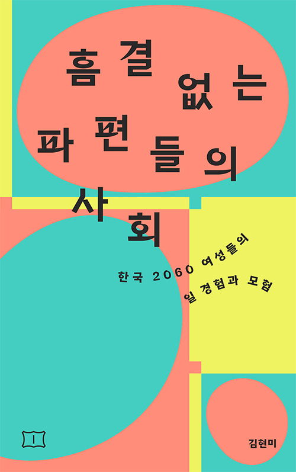
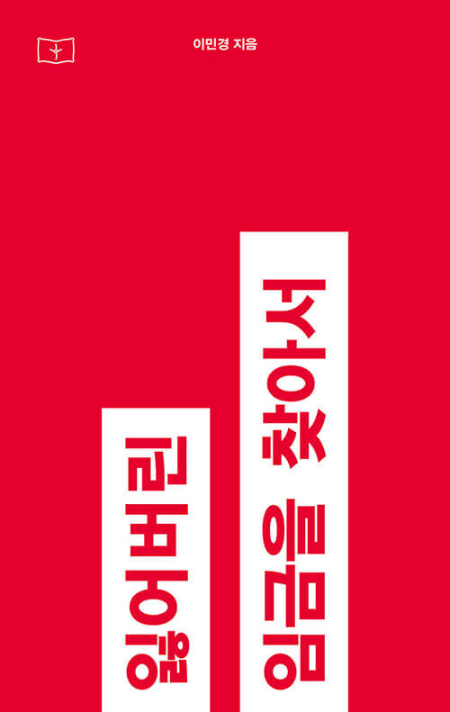
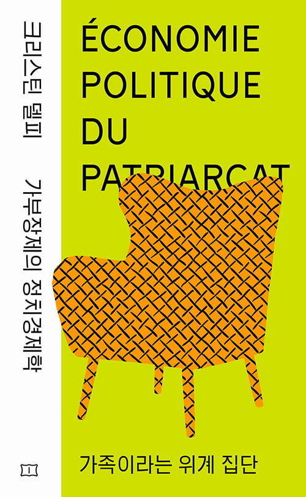

당신은

광범위 리더형
페미니스트
자신과 주변을 파악하고 실천하는 힘을 지닌 독서가네요. 당신의 역량을 키워줄 지식과 탐구가 가득한 이 책들을 소개합니다.
- 지적인 도전을 즐기는 편이에요. 호흡이 긴 책도 마다하지 않아요.
- 사회에 관심이 많고, 실용적인 지식에서 힘을 얻어요.
- 페미니즘 주제들에 공감과 고민을 함께 느껴요.
- 치열한 글, 멋진 책을 발견해요.
이런 책이 잘 맞아요!

흠결 없는 파편들의 사회
한국 2060 여성들의 일 경험과 모험
보장된 미래가 사라지는 세계, 끝나지 않는 밥벌이의 고충. 우리는 어떤 구조적 곤경 속에서 어떻게 살아갈까? 페미니스트 문화인류학자가 일하는 한국 여성들을 위해 그려낸 동시대 리얼리즘 생존 지도! 함께 펼쳐보고, 우리의 위치를 알고, 나아갈 길을 찾아보자.

잃어버린 임금을 찾아서
성별 임금 격차 논의를 위해 알아야 할 실용 지식 A to Z! 여성이 여성이라서 평생 잃는 돈은 얼마일까? 우리는 이 현실에 대해 말하는 법을 배워야 한다.

크리스틴 델피 가부장제의 정치경제학
가족이라는 위계 집단
경제 단위이자 생활 환경인 ‘가족’에 관한 크리스틴 델피의 혁신적 논증 2편 수록. 왜 여성은 무료로 노동하며, 스스로 차린 상에서 가장 나쁜 것을 먹게 되었을까?